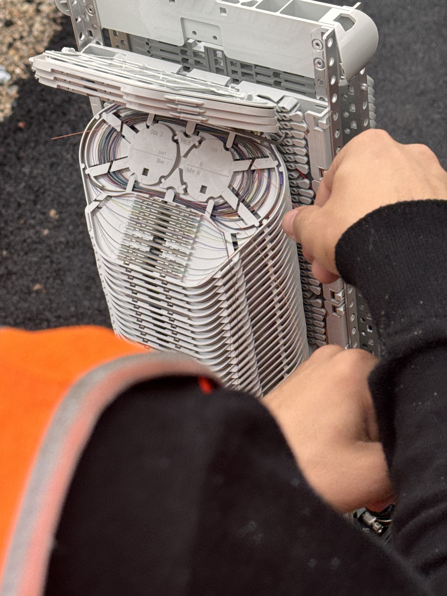

Mon Alternance chez Orange
Je suis actuellement en alternance chez Orange en tant que technicien boucle locale. Mon rôle consiste à effectuer des interventions de maintenance et à gérer des rendez-vous pour assurer le bon fonctionnement de l'ensemble des réseaux dans le département des Alpes-Maritimes (06).
En tant que technicien boucle locale, je travaille sur les réseaux fibre optique et cuivre. Cette expérience me permet de développer mes compétences techniques et de contribuer activement à la qualité des services offerts par Orange à ses clients.
Localisation
Locaux de la BL
5 Rue Thomas Edison,
06800 Cagnes-sur-Mer
